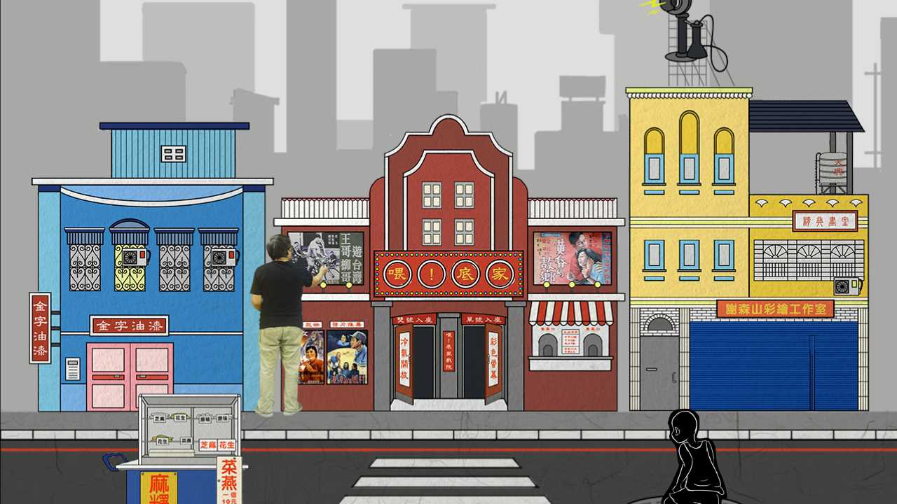

個人作品
喂！底家_waydijia
畢業專題 /2016

畢業專題製作我們選擇「手繪電影海報」這個主題，使用網頁當作介紹媒介，介紹傳統手繪電影海報，瀏覽者可從網站中了解傳統手繪海報的歷史，網頁首頁有許多互動式招牌設計，有別於一般網頁設計思維，左上角仍有選單可做選擇。瀏覽者最後可在互動頁面中製作出屬於自己的電影海報，並分享給朋友，讓大家能在數位化的方式下繼續將它保存下去。
這次的製作當中負責網頁架設和互動工作，一開始會播放前導動畫，播放完畢直接關閉影片導入，首頁採單頁式無分頁，直接在首頁和物件互動，利用jQuery呈現動態互動效果，亦使用JavaScript和物件點擊產生互動回饋，使用者可點擊物件發出聲音、滑過物件隨機出現工作人員個人照片，網頁資訊觀看完可自行製作出一張屬於自己的手繪電影海報。